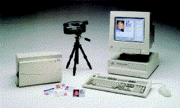

ID-kortproduksjonsutstyr

Produser ID-kortene selv
ID-kort til alle ansatte er en viktig del av sikkerheten i en organisasjon.
Vårt Windows-baserte system for ID-kortproduksjon hører til verdens mest
benyttede og muliggjør trykking av høykvalitets foto-ID direkte på plastkort
uten å gå veien om tungvinte laminater. Dette gjør at ID-kort kan utstedes
momentant, uten etterarbeide og til priser man hittil bare har kunnet drømme
om. Systemet forutsetter PC og består av video-grafikkort, fargekamera og
printer samt programvare. Programvaren har en rekke "verktøy" som gjør det
mulig å designe kortets layout nøyaktig slik du ønsker, inklusive logo. Når en
kort-layout er etablert, kan man avfotografere el. scanne inn foto/signaturer
osv. Bilder kan også importeres fra foto-CD. Benyttes et eksisterende system
for strekkodeavlesning så kan strekkoden skrives inn som en del av ID-kortet.
Dersom en ansatt mister sitt kort eller firmaet forandrer sin logo, kan nytt
kort utstedes uten tidkrevende foto-opptak. Alt ligger lagret på PC og det tar
kun kort tid å trykke ut nytt kort. Det ideelle system for skoler, offentlige
etater, organisasjoner og bedrifter.
![[Oslonett Home]](/graphics/home.gif)
![[Oslonett Markedsplassen]](/graphics/market.gif)